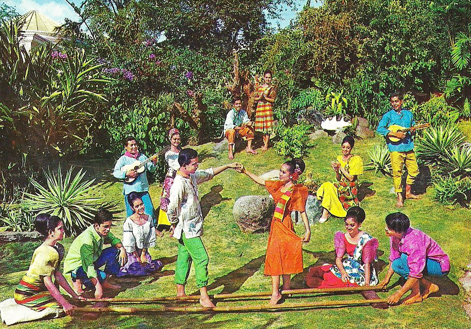
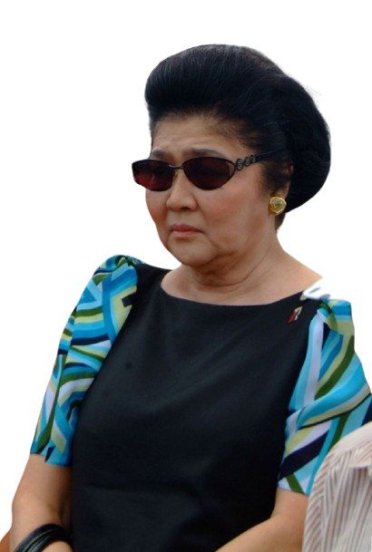
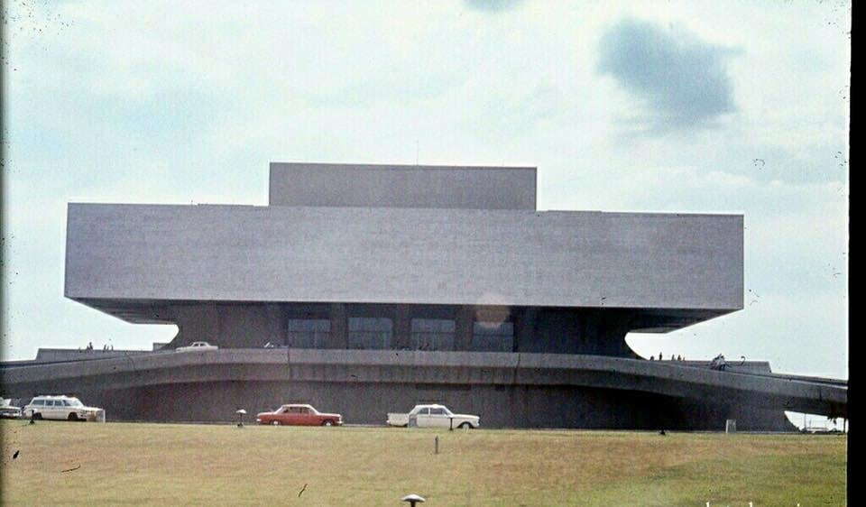
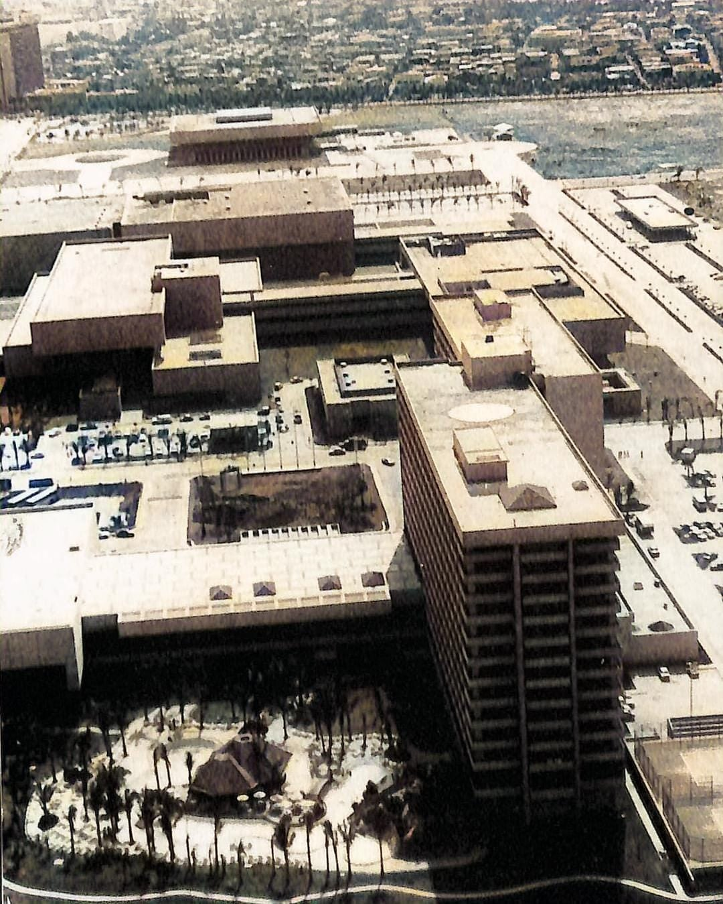
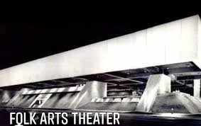
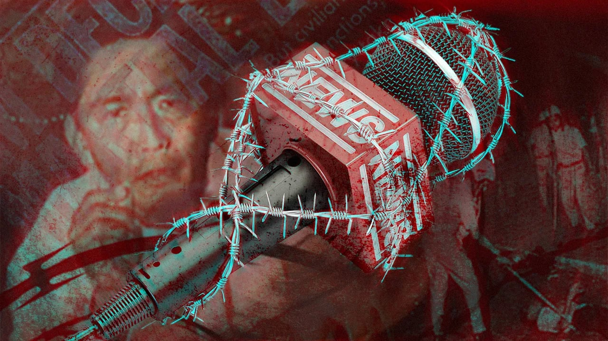
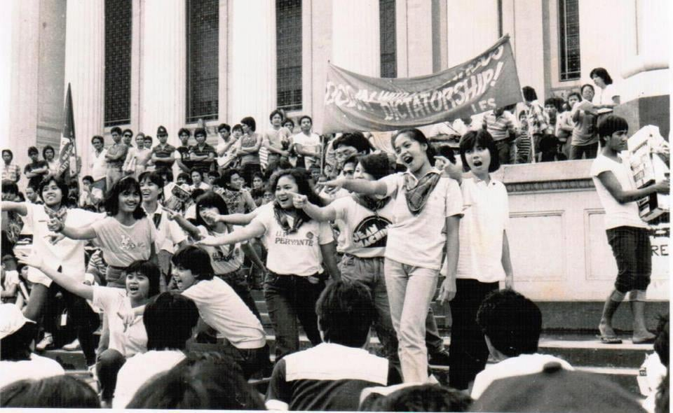

Cultural Issues
An examination of culture during the Marcos era — from grand state-sponsored cultural institutions and image-building projects to censorship, propaganda, and the artists who responded to authoritarian rule through literature, film, theater, and visual art.

Culture became both a showcase of national ambition and a field of political controlCultural Vision and National Identity

Imelda Marcos and the Cultural State
During the Marcos administration, culture was treated not only as a matter of artistic development, but also as an instrument of national image-building. First Lady Imelda Marcos played a central role in this vision. She promoted the idea that cultural institutions, architecture, and the arts could present the Philippines as refined, modern, and globally significant.
Under this approach, the state invested heavily in theaters, convention halls, art spaces, and performance venues. These projects were intended to showcase Filipino talent, preserve national heritage, and place the country on the international cultural map. To supporters, this was a bold attempt to define a modern Filipino identity. To critics, it was also a highly centralized cultural agenda closely tied to elite prestige and political power.
Key Facts
- The Marcos administration heavily promoted culture as part of its nation-building program
- Imelda Marcos became the most visible figure behind many major cultural projects
- The Cultural Center of the Philippines (CCP) opened in 1969
- Other landmark projects included the Folk Arts Theater, PICC, Manila Film Center, and National Arts Center
- These institutions hosted concerts, conferences, festivals, exhibitions, and international events
- Critics argued that many projects were too costly and disconnected from the needs of ordinary Filipinos
- Culture and media during Martial Law were also shaped by censorship, propaganda, and state control
Building a Cultural Showcase
The most visible cultural legacy of the Marcos period was the construction of large-scale institutions meant to symbolize national sophistication. These buildings were not merely functional venues. They were designed to project power, elegance, and permanence. In many ways, they became architectural expressions of the regime’s desire to shape how the Philippines would be seen — both by its own people and by the wider world.
Among the best-known projects were the Cultural Center of the Philippines, the Folk Arts Theater, the Philippine International Convention Center, the Manila Film Center, and the National Arts Center in Mount Makiling. These sites hosted performances, film festivals, diplomatic gatherings, beauty pageants, and international conferences. They created spaces where Filipino artists could perform on prestigious stages, but they also served as monuments to the regime’s taste, ambition, and political messaging.



Prestige, Cost, and Controversy
Although these cultural projects were presented as symbols of progress, they were also deeply controversial. Many Filipinos questioned the enormous public spending involved, especially at a time when poverty, inflation, political repression, and social inequality remained pressing national problems. Critics argued that the regime prioritized spectacle and prestige while many communities lacked adequate housing, public services, and economic security.
Some projects also became associated with allegations of corruption, rushed construction, and labor abuses. The Manila Film Center in particular remains one of the most controversial structures of the era, remembered not only as a monument to state ambition but also as a symbol of excess and human cost. As a result, Marcos-era cultural infrastructure occupies an uneasy place in Philippine memory: admired by some for its scale and architectural boldness, but condemned by others for the conditions under which it was built.

Culture in the Marcos era was never neutral: it was used to inspire national pride, display elite power, and shape how the regime wanted the country to be seen.
Culture, Media, and Censorship Under Martial Law
The declaration of Martial Law in 1972 transformed not only politics, but also the cultural environment. Newspapers, radio stations, television networks, and publishing outlets were shut down or placed under tight government control. Censorship became a defining feature of public expression. Works that openly challenged the regime, criticized state violence, or questioned official narratives could be suppressed, banned, or heavily edited.

During this period, the regime promoted themes of national discipline, stability, obedience, and loyalty to the state. Official cultural messaging often presented authoritarian rule as necessary for national renewal. Government-approved media and public events helped reinforce the idea that social order and centralized power were essential to progress. This made culture an important part of the regime’s propaganda machinery.
Yet censorship did not eliminate criticism. Instead, it forced many artists, filmmakers, playwrights, and writers to become more indirect, inventive, and symbolic. Meaning was often hidden in allegory, metaphor, coded dialogue, or historical parallels. In this way, repression changed not only what could be said, but also how it had to be said.
Artistic Response and Cultural Resistance
Despite the climate of fear, the Marcos years produced important works in Philippine literature, film, and theater. Many of these works reflected the anxieties, inequalities, and moral tensions of life under authoritarian rule. Some confronted repression directly. Others approached it through character studies, social realism, satire, or stories about ordinary people living under intense pressure.
Theater groups, independent filmmakers, campus publications, and socially engaged writers all helped preserve a space for critical thought. Their work showed that culture could not be reduced to state ceremony or official architecture alone. Even within a controlled environment, Filipino artists found ways to document suffering, question authority, and preserve memory.
This is one of the lasting contradictions of the period: the same era that produced some of the most ambitious cultural institutions in Philippine history also produced a body of art shaped by resistance, grief, and political awakening.

Legacy of Marcos-Era Cultural Policy
The cultural legacy of the Marcos administration remains contested. Some of the institutions built during this time continue to function as major venues for performance, diplomacy, and the arts. The CCP, PICC, and other sites still occupy an important place in the country’s cultural life. Their continued use has led some observers to argue that the period left behind tangible infrastructure that outlasted the regime itself.
At the same time, these structures cannot be separated from the political context in which they were built. For many Filipinos, they are reminders of a government that used culture to project grandeur while limiting freedom and concentrating power. Because of this, Marcos-era cultural policy is remembered in two ways at once: as a period of major institutional investment in the arts, and as a time when culture was deeply entangled with propaganda, inequality, and authoritarian rule.
Cultural Timeline
Cultural Center of the Philippines Opens
The CCP becomes the flagship institution of the regime’s cultural development program and a symbol of elite national prestige.
Expansion of State-Sponsored Cultural Projects
Large venues and institutions are developed to host major performances, conferences, exhibitions, and international events.
Martial Law Declared
Censorship intensifies, and media, publishing, and public expression increasingly come under state control.
Culture as Spectacle and State Messaging
International festivals, formal performances, and image-building projects continue even as critics condemn excess and repression.
Growing Criticism of Marcos Cultural Projects
Economic decline, controversy, and public anger sharpen criticism of costly prestige projects and their political symbolism.
Reassessment of the Era
Filipinos continue to debate whether Marcos-era cultural institutions should be remembered mainly as artistic investments, political monuments, or both.